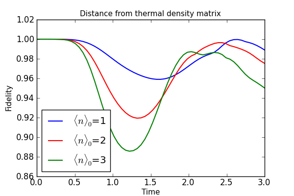

Measuring the distance between density matrices via the fidelity¶
Here we measure the distance of a single mode (mode #1) of a trilinear Hamiltonian from that of a thermal density matrix characterized by the expectation value of the number of excitations in the mode at time t. Here the pump mode (mode #0) is assumed to be in a initial coherent state with the given excitation number.
from qutip import *
from pylab import *
fids=zeros((3,60)) #initialize data matrix
hilbert=[4,5,6] #list of Hilbert space sizes
num_sizes=[1,2,3] #list of <n>'s for initial state of pump mode #0
#loop over lists
for j in range(3):
#number of states for each mode
N0=hilbert[j]
N1=hilbert[j]
N2=hilbert[j]
#define operators
a0=tensor(destroy(N0),qeye(N1),qeye(N2))
a1=tensor(qeye(N0),destroy(N1),qeye(N2))
a2=tensor(qeye(N0),qeye(N1),destroy(N2))
#number operators for each mode
num0=a0.dag()*a0
num1=a1.dag()*a1
num2=a2.dag()*a2
#initial state: coherent mode 0 & vacuum for modes #1 & #2
alpha=sqrt(num_sizes[j])#initial coherent state param for mode 0
psi0=tensor(coherent(N0,alpha),basis(N1,0),basis(N2,0))
#trilinear Hamiltonian
H=1.0j*(a0*a1.dag()*a2.dag()-a0.dag()*a1*a2)
#run odesolver
tlist=linspace(0,3,60)
states=odesolve(H,psi0,tlist,[],[])
mode1=[ptrace(k,1) for k in states] #extract mode #1
num1=[expect(num1,k) for k in states] #get <n> for mode #1
thermal=[thermal_dm(N1,k) for k in num1] #calculate thermal matrix for <n>
fids[j,:]=[fidelity(mode1[k],thermal[k]) for k in range(len(tlist))] #calc. fidelity
#plot the results
fig=figure(figsize=[6,4])
plot(tlist,fids[0],'b',tlist,fids[1],'r',tlist,fids[2],'g',lw=1.5)
ylim([.86,1.02])
xlabel('Time',fontsize=11)
ylabel('Fidelity',fontsize=11)
title('Distance from thermal density matrix',fontsize=11)
legend(('$\langle n\\rangle_{0}$=1','$\langle n\\rangle_{0}$=2','$\langle n\\rangle_{0}$=3'),loc=3)
savefig('examples-fidelity.png')
close(fig)
